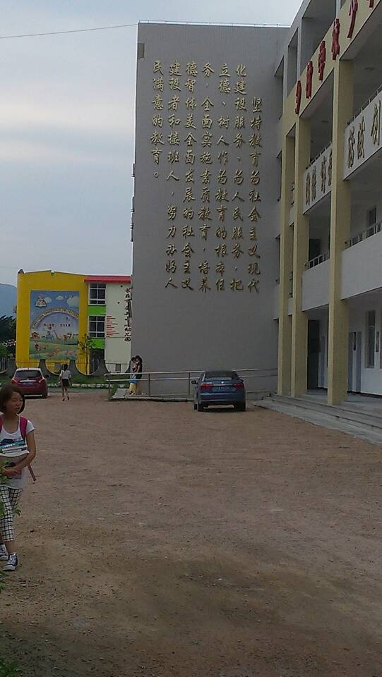

Conversation with 81184027 at Tue 08 Jul 2014 12:04:32 PM CST on 154115835 (webqq)
(12:05:03 PM) 上善若水: 资中筠对于中国教育深感痛心和担忧。曾表示，中国目前的教育方式传授的就是完全扼杀人的创造性和想象力的极端功利主义。同时对中国大陆大学的课题制提出批评，认为其完全破坏了教育最本质的东西。对985工程和211工程提出了质疑，并认为唯一的办法，就是要放开思路，允许私人办学。
(12:05:03 PM) 上善若水: 资中筠对于中国教育深感痛心和担忧。曾表示，中国目前的教育方式传授的就是完全扼杀人的创造性和想象力的极端功利主义。同时对中国大陆大学的课题制提出批评，认为其完全破坏了教育最本质的东西。对985工程和211工程提出了质疑，并认为唯一的办法，就是要放开思路，允许私人办学。
(12:05:07 PM) 光: 嗯
(12:05:03 PM) 上善若水: (#169202)资中筠对于中国教育深感痛心和担忧。曾表示，中国目前的教育方式传授的就是完全扼杀人的创造性和想象力的极端功利主义。同时对中国大陆大学的课题制提出批评，认为其完全破坏了教育最本质的东西。对985工程和211工程提出了质疑，并认为唯一的办法，就是要放开思路，允许私人办学。
(12:06:10 PM) 福建-福州&水浒: (#169203)呵呵
(12:06:10 PM) 福建-福州&水浒: (#169203)呵呵
(12:06:16 PM) lost message from #169204 to #169204
(12:08:06 PM) 福建-福州&水浒: 
(12:08:23 PM) 福建-福州&水浒: 真心看不懂
(12:06:38 PM) 光: (07/07/2014 05:40:41 PM) 风报比: 但是毛和中共的兴起都是利用了知识人的力量。共产党起家的时候，里面一大半都是来源于知识人，陈独秀、李大钊等这都是知 识界的领袖人物啊。在国民党统治时期，毛就说学生运动是“第二条战线”。他认为如果没有知识人的协助，革命无法成功。但是革命最终的成功也要消灭知识人， 把他们贬成一钱不值的“臭老九”，这样党才能真正掌权。整体地看，共产党只把知识人当作工具来用。夺取政权以后，有强烈道德意识的知识人在共产党中已成了 可怕的敌人。现在中共重视的只是些有工具价值的技术人，比如经济、贸易、和科技方面。具有独立思想和批判精神的人文社会学科方面的知识人，它不但不尊重， 反而尽力压抑，这一点只要看看中共的社科院便清楚了。
(12:06:45 PM) 光: 另外的群看到的
(12:07:39 PM) 光: (07/07/2014 05:37:05 PM) 风报比: 但是在近几十年以来，在中共的统治下，中国文化中坏的部分都被加强了，好的部分都被丢掉了。这也不是我的偏见。比如过去中国人非常讲人情，做事情要合理也 要合情，但中共搞阶级斗争之后，整个局面改变了，人情没有了。人与人互相猜防，三个人在一起就不敢说真话。再比如说官本位，这是中国传统中发展出来的一大 弊端，但却在中共统治下达到了登峰造极的地步。今天大陆上一切都是官作主，学术界也是如此。学术领导权完全在“官”手上，真正学者反而不受人尊敬。过去我 们提到蔡元培、王国维，在学术上都是令人肃然起敬的，但是现在有这样的人物吗？
(12:08:14 PM) 光: 学术领导权完全在“官”手上
(12:08:35 PM) 光: 这就可以解释为什么现在的学者好像长的都像贪官
(12:09:12 PM) 光: 替体制说话的专家多了，说真话的学者就少了
(12:10:23 PM) 光: 搞学术也成了职业也成了饭碗
(12:10:27 PM) 光: 这是可悲的
(12:14:18 PM) The account has disconnected and you are no longer in this chat. You will automatically rejoin the chat when the account reconnects.